Every photo from millstone.bappy.com, 2003 and 2004, saved at the size it was posted, with the captions the band gave them. Uncaptioned ones were page headers there.
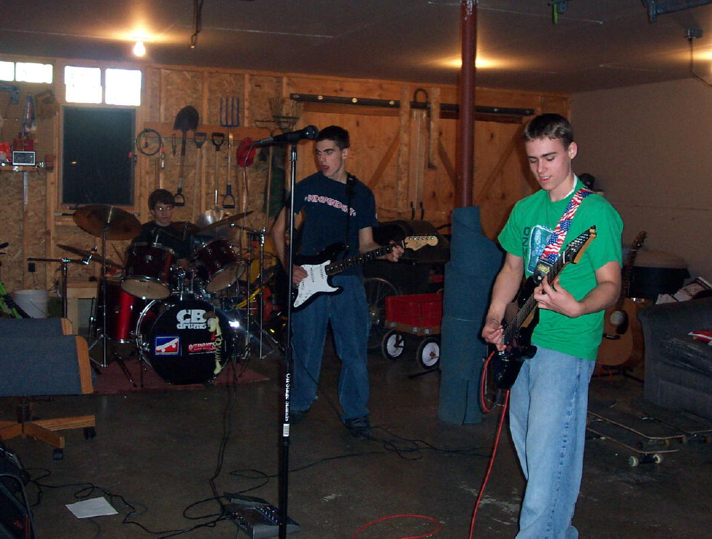
Early Millstone way back at Halloween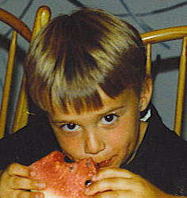
Dave Hayes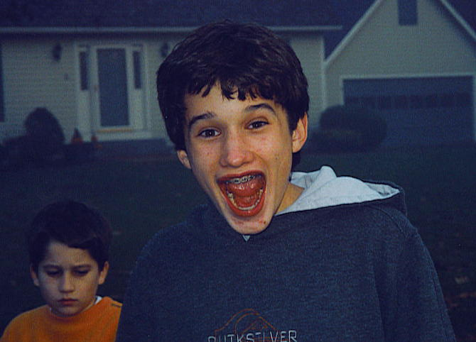
Jake McCoy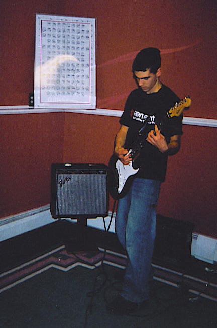
Dave Robinson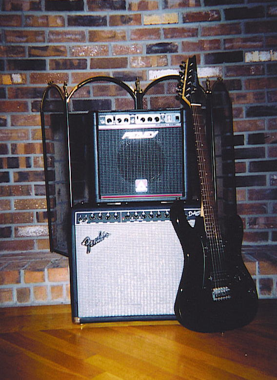
Hayes' Arsenal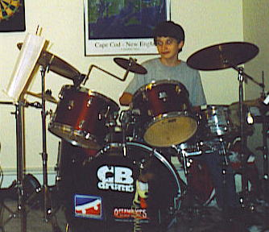
Jake on His Set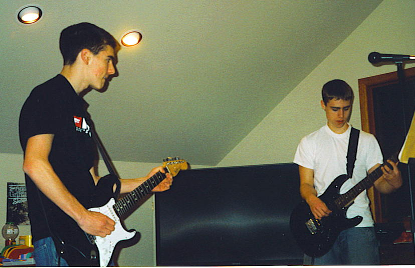
Dave and Dave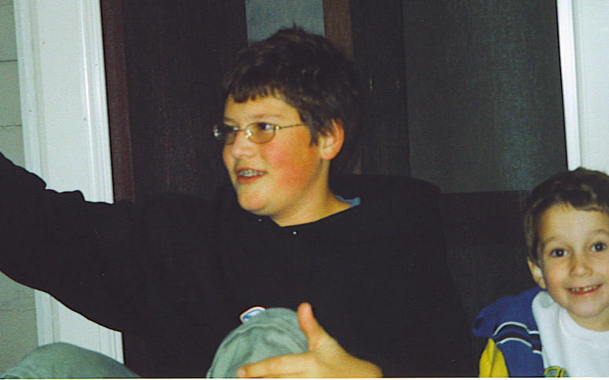
Bobby (the Roadie) and Jon (The Bouncer)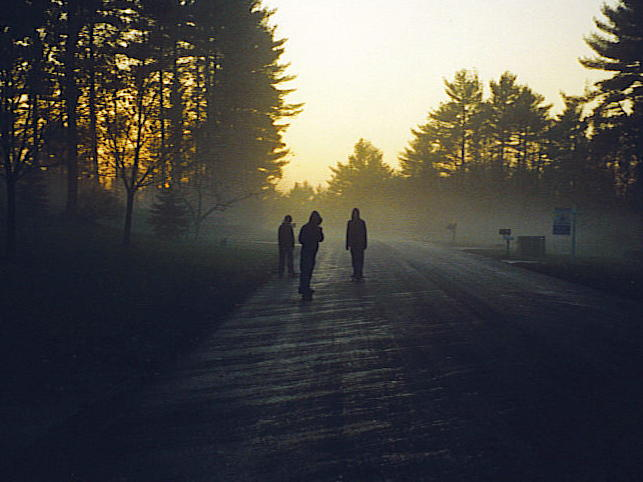
Early Millstone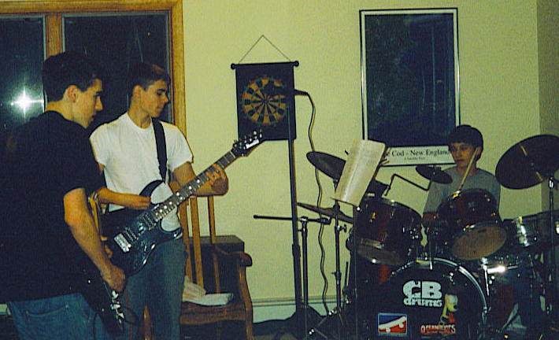
Early Millstone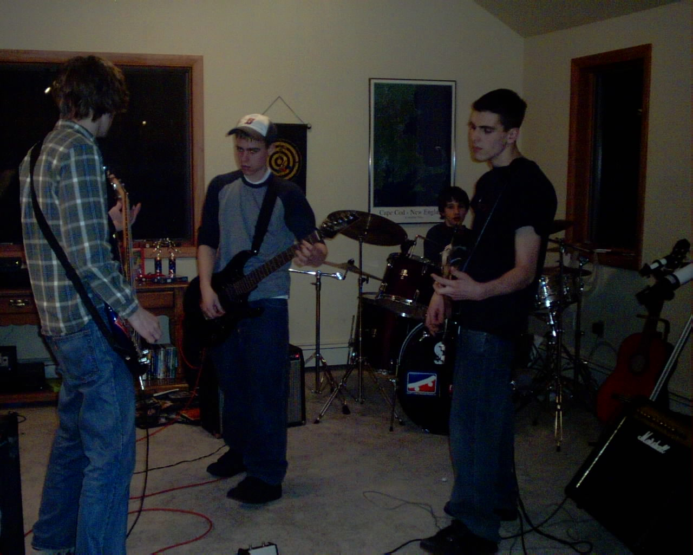
Practice 1-7-04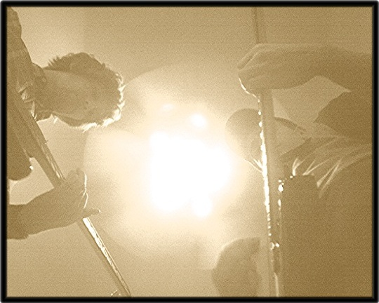
Not another picture... (Dave H)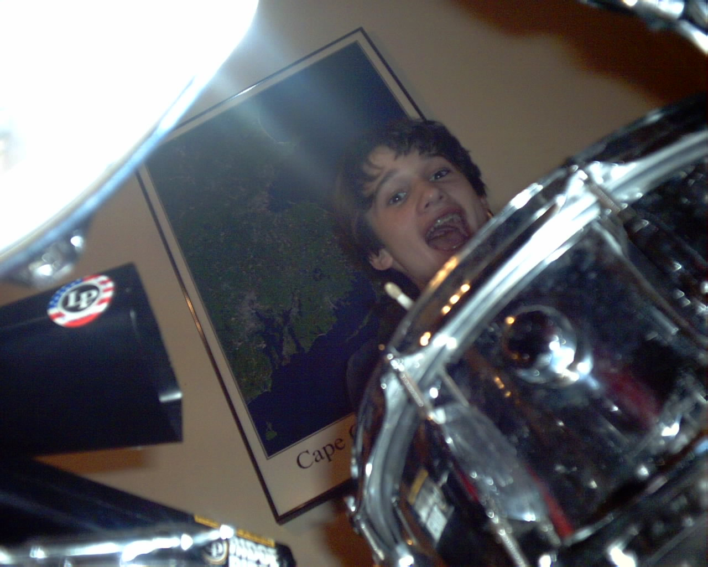
Is it just me, or does Jake always seem to have his mouth open?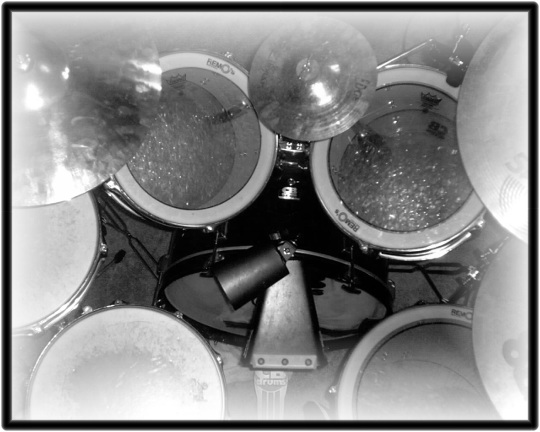
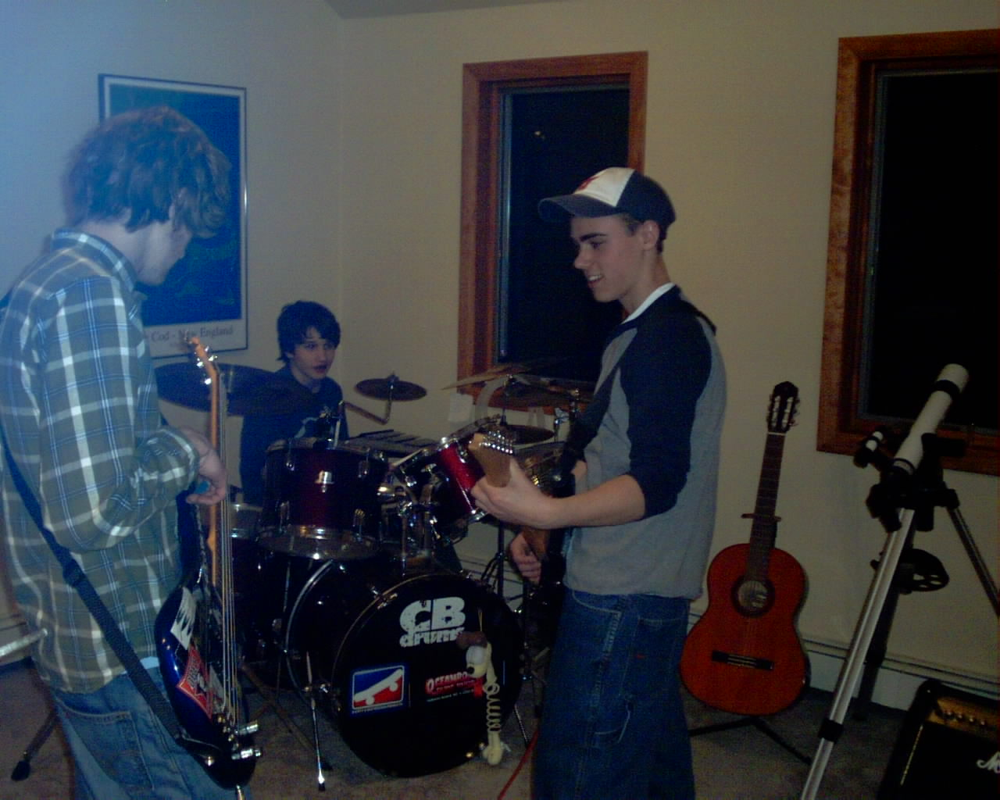
Keith and Dave H. working on Millstone's newest creation.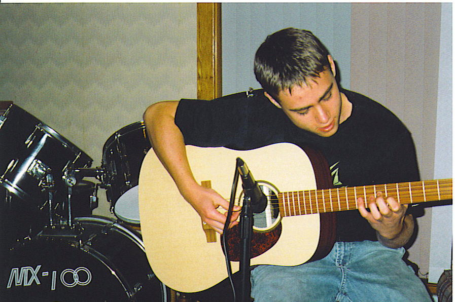
Hayes Recording the Acoustic Version of Nothing Society on the New Martin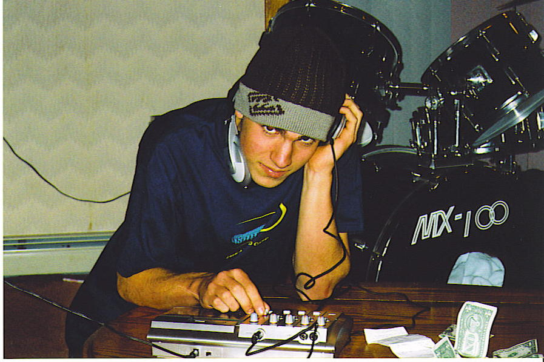
Robinson Mixing Nothing Society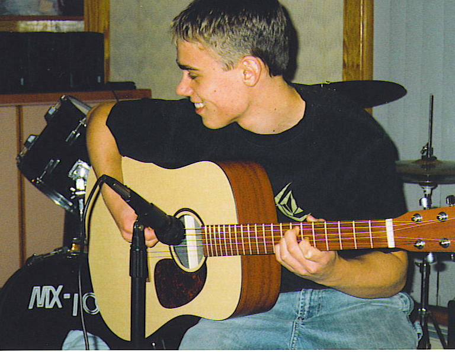
Hayes Having a Grand 'ol Time Recording Nothing Society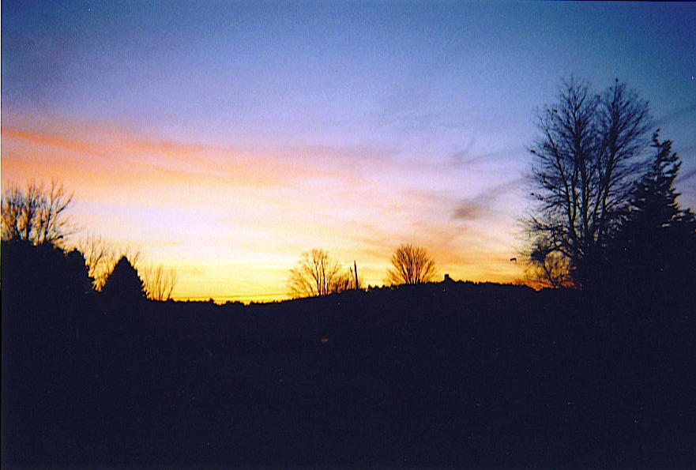
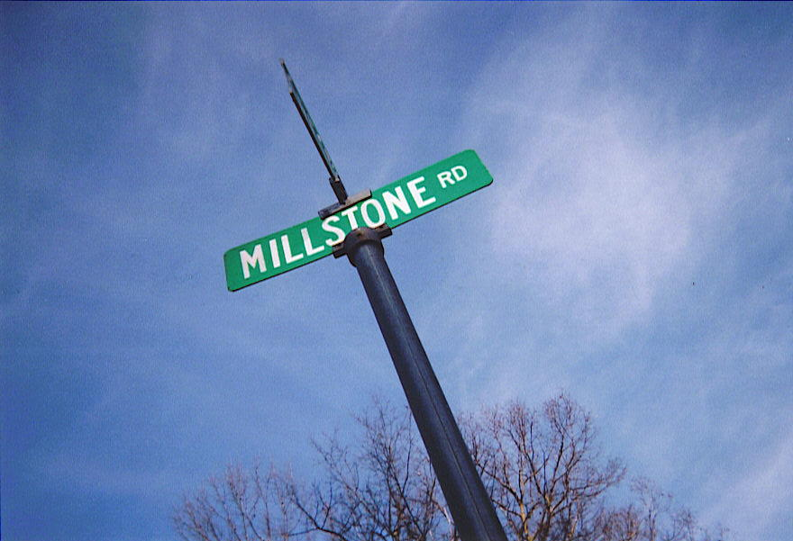
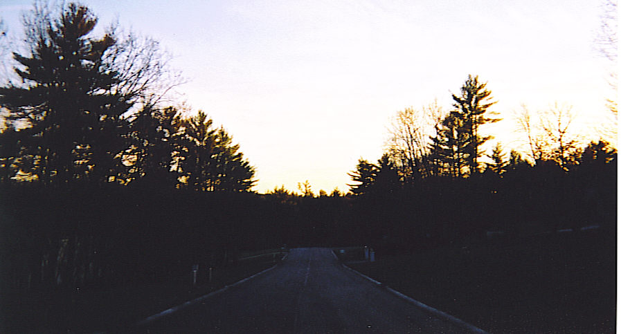
The Legendary Road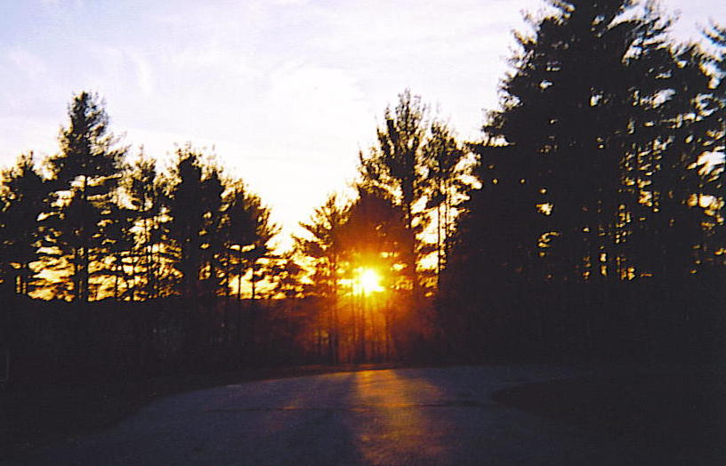
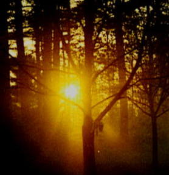